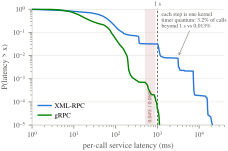

The Core Result: 16 Hosts
10 primaries and 6 hosts that can act as backups, 2 of them deliberately
degraded. This is the scenario the paper is actually about: does knowing
which hosts are bad change anything once hosts differ in quality?
Re-run on bare metal. This scenario has since been repeated on ten
networked machines, each backup pinned to its own physical core, with degraded hosts
slowed by the Linux kernel rather than by a sleep — see
Bare Metal. The ordering below holds there. The absolute
latencies do not: the p99 figures on this page sit on a one-second plateau caused by
DEFT's five-deep accept queue, not by backup placement.
XML-RPC: 5 seeds × 3 trials (15 runs)
gRPC: 5 seeds × 5 trials (25 runs)
200 calls/primary, burst=10
2 of 6 backups degraded
Two transports, and why that matters. Every method is run twice: once
over DEFT's shipped XML-RPC path, and once over gRPC with persistent HTTP/2 channels,
which is how production NFV systems carry state replication. Everything else is held
fixed, so the transport is a controlled variable. DEFT's backup is an HTTP/1.0
SimpleXMLRPCServer with a five-deep accept backlog, so every
call opens a fresh TCP connection; when that backlog overflows the latency tail lands
on the kernel's SYN-retransmission timer rather than on queueing delay. That makes p99
unusable on the XML-RPC arm — it reads either tens of milliseconds or about 1050 ms
depending only on whether a run's SYN-drop rate crosses 1% — so we report mean and
p95. The XML-RPC transport also inflates the measured placement effect by roughly
4.3×. See
the 16-host page for the distribution comparison.
Per-Call Service Latency
| Method | XML-RPC mean (ms) | gRPC mean (ms) | gRPC 95% CI | r | p (Holm) |
|---|
| concentrated | 175.36 | 77.97 | [72.12, 83.99] | +1.000 | <0.0001 (significant) |
| random | 145.00 | 31.45 | [24.34, 39.47] | +0.655 | 0.0185 (significant) |
| round_robin | 144.21 | 26.23 | [24.08, 29.12] | +0.705 | 0.0104 (significant) |
| heuristic | 98.35 | 17.88 | [14.03, 22.76] | — | — |
| optimal | 90.73 | 18.82 | [14.30, 24.45] | -0.046 | 1.0000 (n.s.) |
| PPO | 89.38 | 13.83 | [12.57, 15.49] | -0.200 | 1.0000 (n.s.) |
Mean service latency (ms), gRPC arm — log-scaled bar widths
Bar widths use a log scale so they fit on screen. Exact values are in the table above.
Statistical Comparison
Statistics are run-level: one independent observation per (method, context seed,
trial), compared with a paired Wilcoxon signed-rank test and Holm-Bonferroni
correction across the family, with cluster-bootstrap confidence intervals that
resample runs rather than individual calls. Pooling individual RPC calls, as an
earlier version of this site did, treats thousands of correlated requests against one
server process as independent samples and drives p-values to zero without adding
evidence.
The Two Transports Side by Side
Complementary CDF of per-call service latency, both transports, log–log. The XML-RPC
tail is a staircase of kernel timer quanta rather than a queueing curve: 3.20% of
calls land beyond 900 ms, against 0.013% under gRPC — a 240× difference in tail mass.
The maxima are 22,773 ms and 1,139 ms.

What this means: once hosts differ in quality, feature-aware
selection wins, and it wins on both transports.
heuristic, optimal and
PPO never route a primary to a degraded host in any seed;
round_robin hits one on 2 of 10 assignments in every seed,
because it cycles blindly with no way to know which hosts are bad;
random is inconsistent, and its confidence interval is far
wider than anyone else's — random placement is not merely mediocre on average, it is
unstable. The three feature-aware methods are statistically indistinguishable from one
another, so the cheap deterministic heuristic matches the exact optimum.